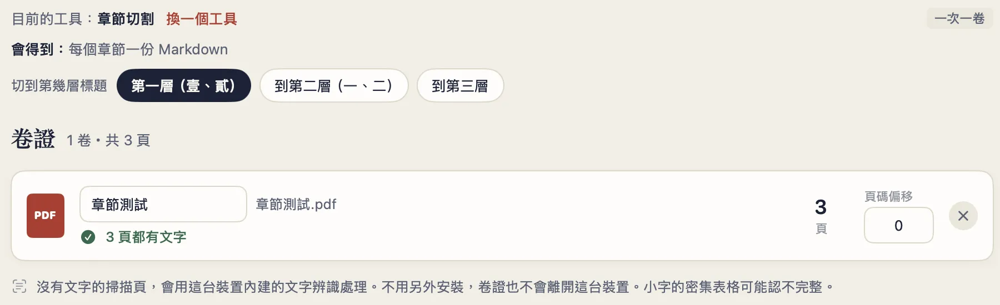
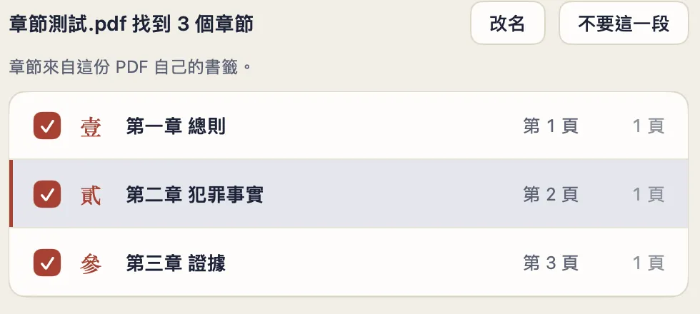
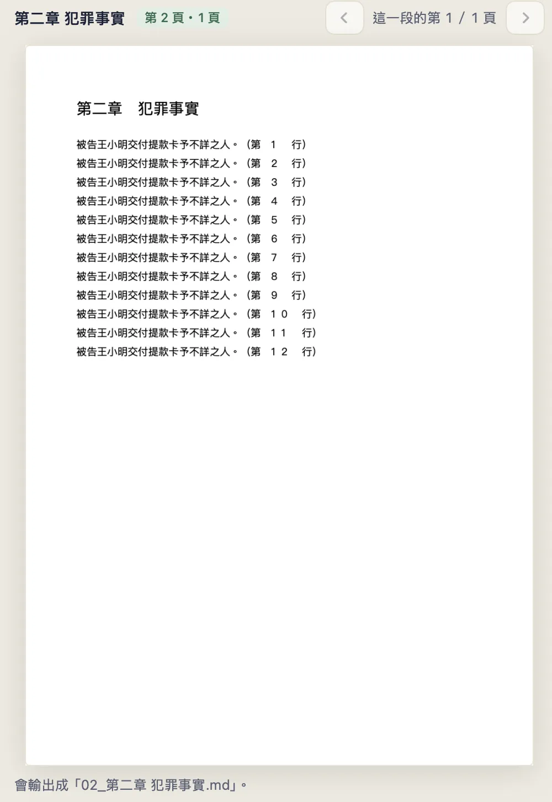
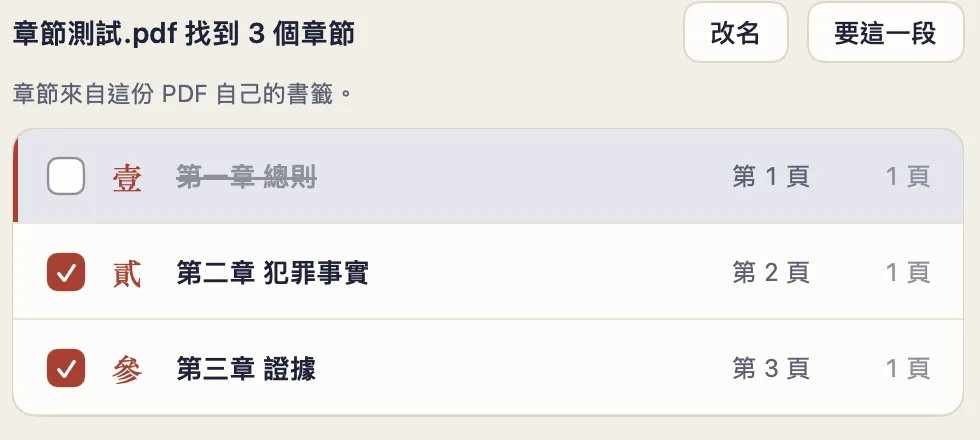
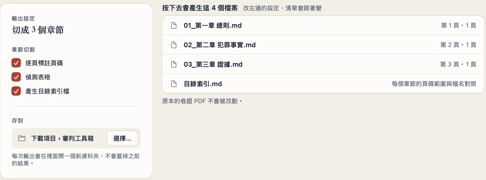

照章節標題把一份 PDF 切開：章節切割教學
書狀、判決、鑑定報告這類有章節的文件，常常只需要其中一兩章，或想一章一章交給其他工具處理。「章節切割」找出每一章從哪裡開始，讓你核對、取捨，再把每一章存成一份 Markdown。
這個工具做什麼
「章節切割」在首頁的「讀卷」那一組（Mac 也可以按 ⌘6）。放入一份 PDF，App 找出每一章從哪一頁、哪一行開始，列成清單讓你核對；輸出時每一章存成一份 Markdown 文字檔，另附一份目錄索引。
輸出的是文字（.md），不是切開的 PDF。原本的 PDF 不會被改動。
這篇用合成的示範檔「章節測試.pdf」說明：3 頁，第一章 總則、第二章 犯罪事實、第三章 證據，檔案本身有書籤。放入 PDF 的幾種方法，在第一次使用那篇。
App 怎麼找章節
- PDF 有書籤時，用書籤。清單上方會寫「章節來自這份 PDF 自己的書籤。」
- 沒有書籤時，找章節標題的寫法。一行的開頭是下面這些樣式，而且整行不長（60 個字以內），就當成標題：
- 第一層：「壹、」「貳、」、「第一章」「第二編」、「1.」、「【證據】」這類括號標題
- 第二層：「一、」「二、」、「（一）」、「第一節」、「1.1」
這是規則判斷，不是 AI 模型。掃描頁會先自動辨識文字，再找標題。
第一步：放入一份 PDF，選切到第幾層
點「章節切割」，把 PDF 拖進虛線框，或按「選擇檔案…」。這個工具一次處理一份，右上的標籤寫著「一次一卷」。

- 切到第幾層標題：「第一層（壹、貳）」只切大章；「到第二層（一、二）」連「一、」「二、」也切開；「到第三層」用在書籤有三層的檔案。預設是第一層。
- 卷宗簡稱會用在輸出資料夾的名稱（例如「章節測試 章節切割」）。
按右上角的「開始分析」。畫面中間顯示「正在找章節」，頁數多時可以按「停止」。
第二步：核對章節
找完會列出「（檔名）找到 N 個章節」。每一列是一章：勾選框、序號、章節名稱、從第幾頁到第幾頁、共幾頁。第二層的章節會往右縮一格。
左邊：找到的章節

右邊：這一章的頁面

點一列，右邊顯示這一章的頁面，上方是章節名稱與頁碼範圍，用右上角的箭頭翻這一章的其他頁。最下面一行寫著這一章會輸出成哪個檔名。
用標題樣式找到的章節，標題那一行會畫上紅底（「紅底那一行是 App 認出來的章節標題」）。從書籤來的章節沒有紅底。
核對的重點：每一章是不是從標題那一行開始、有沒有把內文的「一、」誤當成標題、有沒有漏掉的章。
改名、不要某一段、換層數
清單上方有兩個按鈕，要先點一列才能按（沒點時寫著「先點一列」）：
- 改名：跳出「修改章節名稱」，名稱會用在輸出的檔名與檔案開頭。
- 不要這一段：這一章不輸出。也可以直接取消那一列的勾選。取消的章節名稱畫上刪除線，右邊寫「這一段沒有勾選，不會輸出。」按「要這一段」或再勾一次就恢復。

清單最下面的「切到第幾層：」可以在這裡改成第一層或第二層，按了會重新找一次章節，之前的取捨會清掉。
清單裡沒有的章節，目前沒辦法手動補一筆，也不能調整某一章從哪裡開始。沒有找到任何章節時，會顯示「沒有偵測到章節」，可以改層數再找一次，或改用「PDF 轉 Markdown」整份轉換。
核對完，按右上角的「下一步：輸出 N 份」。
第三步：選輸出設定

- 逐頁標註頁碼：每換一頁，在文字裡插一行「【第 N 頁】」，方便回頭對原檔。
- 偵測表格：把頁面上的表格轉成 Markdown 的表格。
- 產生目錄索引檔：另外存一份「目錄索引.md」，列出每一章的頁碼範圍與檔名。
右邊列出每一章的檔名與頁碼。檔名是「序號_章節名稱.md」，例如「02_第二章 犯罪事實.md」。第一章前面還有內容（例如判決的抬頭、書狀的當事人欄）時，會多一份「00_開頭內容（章節前）.md」。Markdown 要整份轉完才有內容，這裡沒有預覽。
按右上角的「開始輸出 N 個檔案」。
輸出的檔案
- 每一章的檔案開頭是章節名稱，接著是來源檔名、頁碼範圍（例如「第 2 ～ 2 頁（共 3 頁）」）與切割時間，下面是這一章的文字。
- 目錄索引是一張表：編號、章節、頁碼範圍、檔案（可以點開）。也寫著章節來自「PDF 書籤」還是「自動偵測」。
- 檔案存在「下載項目 › 審判工具箱」底下新開的資料夾，也可以在輸出前用「存到 › 選擇…」換位置。
Mac 的完成畫面有「交給 AI…」，可以把這次切好的章節交給 AI 工具整理，做法在交給 AI那篇。
在 iPhone・iPad 上
步驟相同。在 iPhone 上，「開始分析」「下一步：輸出」等按鈕在畫面下方；清單點一列會整頁顯示那一章的頁面，左右滑看其他頁，「不要這一段」也在那一頁。輸出的檔案在「檔案」App 的「我的 iPhone › 審判工具箱」。細節在在 iPhone・iPad 上使用那篇。
做不到的事／要注意
- 只輸出 Markdown，不切 PDF。要把 PDF 依頁數或書籤切開，用「頁面整理」；卷證依文件切開，用書籤形成。
- 一次處理一份。
- 章節是用書籤或標題寫法判斷的。標題不在行首、寫法特殊（例如只有粗體沒有序號）時找不到；選「到第二層」時，內文裡用「一、」「（一）」開頭的短段落也可能被當成標題，章節會變碎。請在第二步核對。
- 掃描頁靠文字辨識，標題辨識錯就找不到那一章。
- 不取出圖片，圖片裡的文字不會出現在 Markdown 裡。
- 判決下載的「依章節切成多個 Markdown」是同一套切法，自動用到第二層，不能逐章核對；要核對就把判決 PDF 放進這個工具。
整份轉成文字、不分章，用PDF 轉 Markdown。掃描的 PDF 想先讓文字可以搜尋，看可搜尋 PDF。簡短的步驟在使用說明。
常見問題
章節切割會切出 PDF 嗎？
不會。每一章輸出成一份 Markdown 文字檔，另附目錄索引。要切 PDF，請用「頁面整理」或「書籤形成」。
找到的章節太碎或太少怎麼辦？
在確認與預覽這一步，用清單下方的「切到第幾層」改成第一層或第二層，App 會重新找一次。誤判的章節取消勾選即可。